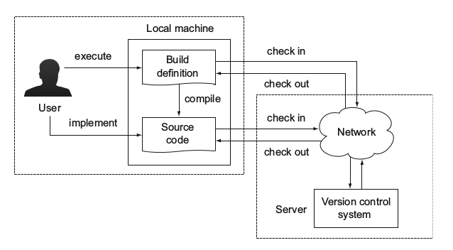

项目自动化简介
想象一下没有自动化构建工具的场景
大部分的软件开发者都会面临下面的情形：
让IDE完成所有的工作. 用IDE来编码，导航到源代码、实现新特性、编译代码、重构代码、运行单元测试，一旦代码写完了，就按下编译按钮。一旦IDE提示没有编译错误测试通过，然后就把代码放入版本控制系统中以便与其他人分享。IDE是非常强大的工具，但是每个人都要安装一套标准的版本来执行上面介绍的任务，当你需要使用一个只有新版IDE才有的特性时，你就不得不更新到新版的IDE。
我的电脑上运行正常. 由于时间比较紧，Joe检查版本控制的代码发现编译不了，似乎是源代码中缺少了某个类，因此他联系了Tom，Tom非常困惑怎么代码在Joe的电脑上没办法编译成功，和Joe讨论完之后，他意识到自己忘记提交一个类到版本控制当中，所以无法编译成功，接下来整个团队都阻塞在这一步，直到Tom提交缺失的那个类上去。
代码集成简直就是个灾难. Acem有两个开发小组，一个集中于开发基于web的用户接口，另一小组集中开发服务器后台程序，当两个小组的人集中在一起测试整个程序时，发现程序的某些功能没有按照预期那样运行，一些链接无法解析或者直接返回错误的结果。
测试过程慢的像蜗牛. QA小组非常急切的接收第一版的app，可想而知，他们对低质量的程序是没什么耐心的，每次程序修改之后，都要进行相同的测试过程。小组停下来检查每次提交的改变，最新的版本是通过IDE构建的，代码传递到测试服务器，但是整个团队都在等待测试结果。
这时候你就需要一个自动化的构建工具。
项目自动化的优势
- 避免手工介入
- 创建可重复的构建过程
- 使得构建非常便捷
构建过程
大多数情况，用户在命令行执行一个脚本，脚本定义了任务执行的顺序，比如：编译源代码、从A路径复制文件到B路径、装配交付，这种自动化构建过程一天可能执行数次。
